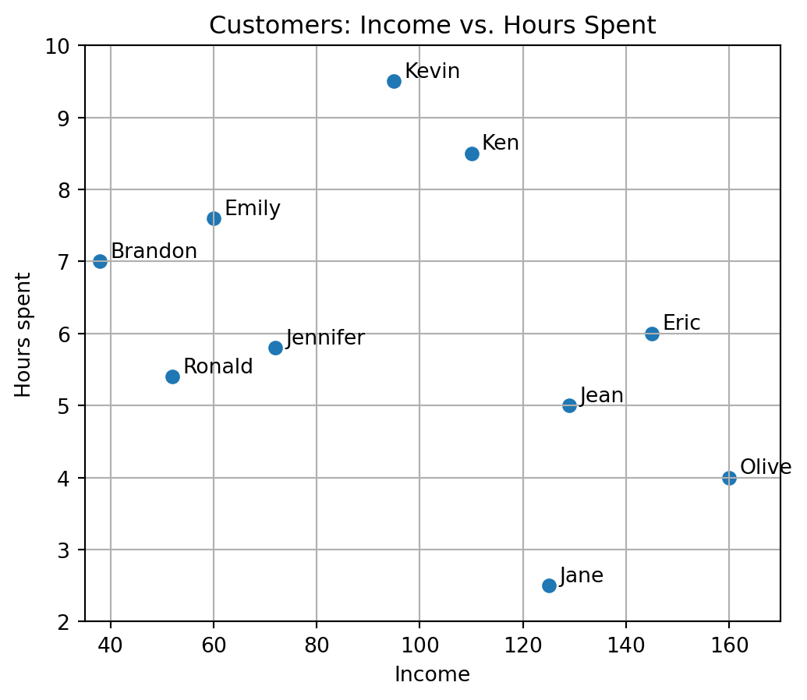
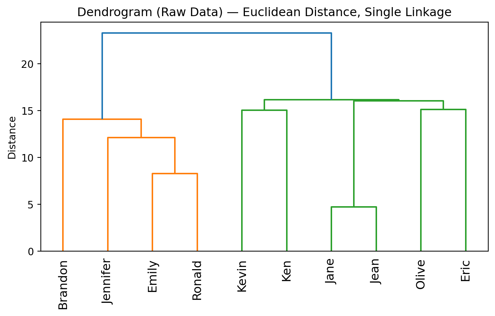
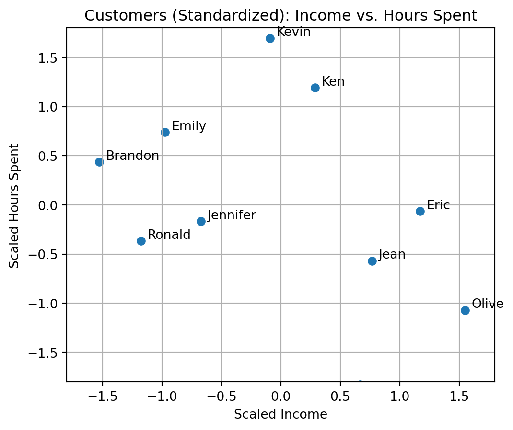

Hierarchical clustering, also known as hierarchical cluster analysis (HCA), is a method that organizes data into a nested hierarchy of groups called clusters. The relationships among these clusters are typically visualized in a dendrogram, a tree-like diagram showing how observations merge step by step based on their similarity.
This section introduces hierarchical agglomerative clustering, the most common form of hierarchical clustering. We will:
Cluster a small customer dataset step by step.
Visualize both the data and the dendrogram.
Examine the effect of normalization (scaling) on clustering results.
Compare several linkage methods for measuring inter-cluster distances.
Explore how to cut the tree to define clusters.
20.1 Data Preparation
We start with a simple customer segmentation dataset of 10 individuals, each described by two attributes that have different numerical scales:
Income: monthly income in arbitrary units
HoursSpent: average weekly hours spent on a particular activity (e.g., shopping or online engagement)
Income HoursSpent
Jane 125 2.5
Kevin 95 9.5
Jennifer 72 5.8
Ken 110 8.5
Jean 129 5.0
Olive 160 4.0
Emily 60 7.6
Ronald 52 5.4
Eric 145 6.0
Brandon 38 7.0
The data can be visualized to gain an intuitive sense of their distribution and potential groupings.
import matplotlib.pyplot as pltfig, ax = plt.subplots(figsize=(6, 5))ax.scatter(df["Income"], df["HoursSpent"])# text labelsfor name, (x, y) in df[["Income", "HoursSpent"]].iterrows(): ax.annotate(name, (x, y), xytext=(5, 2), textcoords="offset points")ax.set_xlim(35, 170)ax.set_ylim(2, 10)ax.set_xlabel("Income")ax.set_ylabel("Hours spent")ax.set_title("Customers: Income vs. Hours Spent")ax.grid(True)plt.show()

You might already notice that some customers (e.g., Kevin and Ken) appear close to each other, while others (Jane or Brandon) seem more distant. Hierarchical clustering will formalize these intuitive patterns by grouping customers based on their distances.
The dataset is intentionally unstandardized, meaning Income values are much larger in scale than HoursSpent. This imbalance allows us to later demonstrate how unscaled features can bias clustering results — and why feature scaling (normalization) is essential in practice.
20.2 Agglomerative Clustering
Agglomerative hierarchical clustering can be performed with SciPys linkage() function. This method starts by computing pairwise distances between all data points, then successively merges the closest clusters until all observations are grouped into a single cluster.
We first compute the pairwise distance matrix using pdist() and optionally convert it to a square matrix form using squareform() for inspection.
from scipy.spatial.distance import pdist, squareform# Pairwise distances (Euclidean)dist_vec = pdist(df.values, metric="euclidean") # condensed vectorprint(dist_vec.shape)print(dist_vec)#squareform(dist_vec) # convert into a matrix form
Next, we perform agglomerative clustering using linkage(). Each merge step combines the two clusters with the smallest inter-cluster distance.
from scipy.cluster.hierarchy import linkage# Perform hierarchical clustering (default: method='single')Z_raw = linkage(dist_vec)# Convert to a readable DataFramepd.DataFrame( Z_raw, columns=['cluster i', 'cluster j', 'distance', 'cluster size'], index=['cluster '+str(i+df.shape[0]) for i inrange(Z_raw.shape[0])])
cluster i
cluster j
distance
cluster size
cluster 10
0.0
4.0
4.716991
2.0
cluster 11
6.0
7.0
8.296987
2.0
cluster 12
2.0
11.0
12.134249
3.0
cluster 13
9.0
12.0
14.091132
4.0
cluster 14
1.0
3.0
15.033296
2.0
cluster 15
5.0
8.0
15.132746
2.0
cluster 16
10.0
15.0
16.031220
4.0
cluster 17
14.0
16.0
16.155494
6.0
cluster 18
13.0
17.0
23.295708
10.0
In this result, each data point starts as its own cluster (a leaf node) with a cluster ID (starting from 0 in the order of rows in the data, i.e., df).
As the algorithm progresses, clusters are iteratively merged based on their distance. New cluster IDs are assigned sequentially in the order merges occur — the earliest (smallest-distance) merge gets the next available ID.
Columns of the resulted array from scipy.cluster.hierarchy.linkage.
Column
Meaning
cluster i
ID of the first cluster merged. < n → refers to an original observation; ≥ n → refers to a previously formed cluster.
cluster j
ID of the second cluster merged. Interpreted in the same way as cluster i.
distance
The linkage distance (merge height) at which the two clusters were merged, determined by the chosen criterion (e.g., complete, average, single).
cluster size
The number of original observations contained in the newly formed cluster after the merge.
20.2.1 Dendrogram Visualization
A common way to visualize hierarchical clustering results is a dendrogram, which shows how individual observations merge into clusters as distance increases.
from scipy.cluster.hierarchy import dendrogram# Display the dendrogramfig, ax = plt.subplots(figsize=(7, 4.5))dendrogram(Z_raw, labels=df.index.tolist(), leaf_rotation=90, ax=ax)ax.set_title("Dendrogram (Raw Data) — Euclidean Distance, Single Linkage")ax.set_ylabel("Distance")ax.grid(False)fig.tight_layout()plt.show()

In this example, the raw scales differ — the Income variable dominates numerically compared to HoursSpent in terms of pairwise distances between data points. Consequently, the pairwise distances are influenced mostly by Income differences, so the hierarchical tree (dendrogram) may not fully capture the clustering pattern visible in the scatter plot.
20.2.2 Normalization (Standardization)
When features have different numerical scales, clustering results can become biased toward variables with larger ranges. To obtain more meaningful clusters, it is standard practice to normalize the data before computing distances.
As a normalization method, standardization rescales features to have zero mean and unit variance while preserving their relative geometry in feature space.
from sklearn.preprocessing import StandardScaler# Standardize columns (z-scores)scaler = StandardScaler()df_scaled = pd.DataFrame( scaler.fit_transform(df), index=df.index, columns=df.columns)# Visualize the standardized datafig, ax = plt.subplots(figsize=(6, 5))ax.scatter(df_scaled["Income"], df_scaled["HoursSpent"])# Annotate each data pointfor name, (x, y) in df_scaled[["Income", "HoursSpent"]].iterrows(): ax.annotate(name, (x, y), xytext=(5, 2), textcoords="offset points")ax.set_xlim(-1.8, 1.8)ax.set_ylim(-1.8, 1.8)ax.set_xlabel("Scaled Income")ax.set_ylabel("Scaled Hours Spent")ax.set_title("Customers (Standardized): Income vs. Hours Spent")ax.grid(True)plt.show()

After standardization, the data retain their relative positions, but each variable contributes equally to the distance calculation without the domination of single feature.
You should observe a noticeably different tree structure after standardization, since Income no longer overwhelms the pairwise distance calculations. Clusters now form based on a balanced combination of both attributes (Income and HoursSpent).
20.2.3 Heights in Dendrogram
In a dendrogram, the height of each merge represents the inter-cluster distance (or dissimilarity) at which two clusters were joined. These heights correspond directly to the linkage criterion used (e.g., complete, average, or single). Thus, the dendrogram conveys not only the relationships between data points and clusters, but also the sequence and magnitude of merging events throughout the hierarchical process.
The heights are recorded automatically in the third column (distance) of the linkage matrix returned by linkage(). Each height corresponds to the distance at which a new cluster was formed.
# Display merge distances (heights)pd.DataFrame( Z_scaled, columns=['cluster i', 'cluster j', 'distance', 'cluster size'], index=['cluster '+str(i+df_scaled.shape[0]) for i inrange(Z_scaled.shape[0])])# df.reset_index() # check the row labels (i.e., names) and their indices
cluster i
cluster j
distance
cluster size
cluster 10
2.0
7.0
0.542938
2.0
cluster 11
1.0
3.0
0.629250
2.0
cluster 12
6.0
9.0
0.631481
2.0
cluster 13
4.0
8.0
0.644721
2.0
cluster 14
10.0
12.0
0.878661
4.0
cluster 15
5.0
13.0
0.929462
3.0
cluster 16
0.0
15.0
1.160980
4.0
cluster 17
11.0
14.0
1.300701
6.0
cluster 18
16.0
17.0
1.492497
10.0
The height in the dendrogram represents the **criterion *value** (i.e., the inter-cluster distance) used to decide which clusters to merge at each step.
For example, the smallest height corresponds to the closest pair in the dataset — in this case, Jennifer and Ronald. They were merged first because their pairwise Euclidean distance was the minimum. Next, Ken and Kevin were merged, followed by subsequent merges at increasing distances until all data points formed a single cluster.
In summary, the order of merges shows how structure emerges progressively from individual data points, where:
Lower heights: more similar pairs merged earlier.
Higher heights: more distant clusters merged later.
The dendrogram therefore encodes both structure (nested cluster relationships) and process (the order of merges with increasing linkage distances).
20.2.4 Linkages
Linkage methods define how distances between clusters are calculated during agglomerative hierarchical clustering. Changing the linkage criterion can substantially affect both the shape of the dendrogram and the resulting cluster memberships.
Below are commonly used linkage methods and their characteristics:
Single linkage
Uses the smallest distance between any two points across clusters.
Tends to produce chained or elongated clusters because it is sensitive to outliers and nearest-neighbor effects.
Complete linkage
Uses the largest distance between any two points across clusters.
Produces compact, spherical clusters, as it merges only when all points between clusters are relatively close.
Average linkage
Uses the average of all pairwise distances between points in different clusters.
Represents a balance between single and complete linkage, and often yields well-balanced structures.
Centroid linkage
Uses the Euclidean distance between cluster centroids (means).
Can occasionally produce inversions, where a cluster merges at a smaller distance than a previous merge, due to centroid shifts.
The choice of linkage method should depend on the data characteristics (e.g., presence of noise, cluster shape, or scale) and the desired clustering structure.
Below, each linkage method is illustrated on the same standardized dataset using SciPy’s linkage() and dendrogram().
Once a hierarchical tree is built, clusters can be defined by cutting the dendrogram at a specific level or height. This cut divides the tree into several groups, assigning each observation to a cluster based on the branches below that height.
In SciPy, this can be done using the function fcluster() with different criterion arguments:
criterion="maxclust" — cut the tree into a fixed number of clusters (K)
criterion="distance" — cut the tree at a specified linkage height (distance threshold)
One advantage of hierarchical clustering is that cluster definitions at various levels can be explored without retraining the model. Once the tree is computed, it only needs to be “cut” differently to retrieve memberships for any number of clusters.
from scipy.cluster.hierarchy import fcluster# Cut by specifying number of clusters K =3clusters_k3 = fcluster(Z_scaled, criterion="maxclust", t=K)clusters_k3